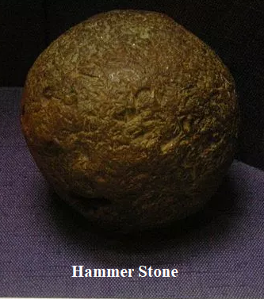
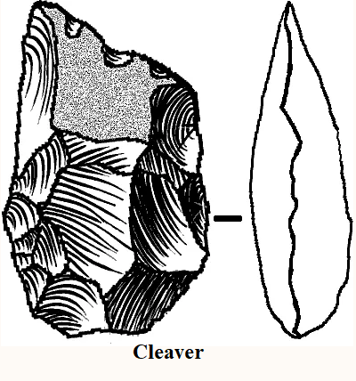
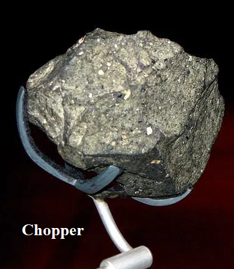
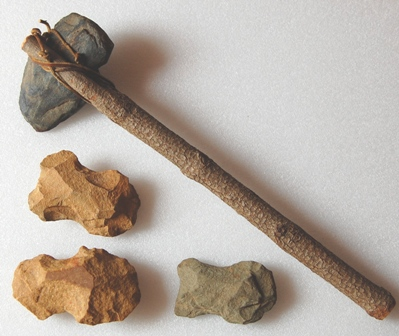
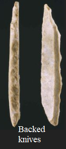
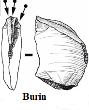
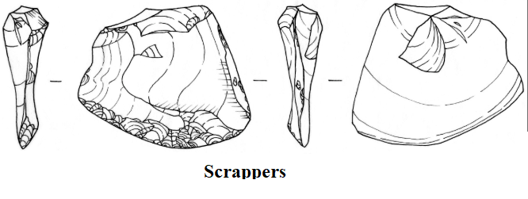
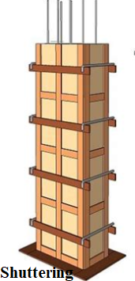

Chapter 1: Introduction of Carpentry¶
Introduction of tools/equipment¶
As a good workman is known by his tools, a good carpenter must know his tools/equipment for various jobs. Various hand tools used in wood work or carpentry shop are classified under following categories:
S/n |
Category of tools |
Tools name |
|---|---|---|
1) |
Measuring tools |
|
2) |
Marking tools |
|
3) |
Holding and supporting tools |
|
4) |
Cutting tools |
|
5) |
Planning tools |
|
6) |
Boring and drilling tools |
|
7) |
Striking tools |
|
8) |
Other Miscellaneous tools |
|
- Various types of powered tool/equipment required for carpenter are::
Nail gun
Circular saw
Drill (3/8 ” to 1/2 ” chuck)
Reciprocating saw
Extension cords
A tool in good condition is the primary requirement for fine carpentry. So great care should be given while maintaining the tools.
- Care and maintenance of tools:
Store your tools and equipments properly in pegboards, toolboxes, bags, drawers or shelves.Keep your tools in a dry place to protect from corrosion or rust.Hang your garden tools above the ground.Put silica gel packs or rust collector with the tools in drawers, bags or toolboxes.Always store your power tools in their respective original cases.Clean your tools after and before the job.Sharpen your tools often with great care.Inspect your tools in regular basis and repair them if they are not in right condition.
The importance of tools/equipment in carpentry trade made of stones in stone age¶
Stone age refers to the early period of time which was approximately 3.3 million years ago, when people uses different tools and structures made out of stones.
Some of the tools in carpentry made of stones in stone age are as follows:
Hammer stone
It is made of strong stone usually of sandstone, quartzite or limestone that doesn’t break with ease.
It was used throughout the world including Asia, Europe and Africa.
Figure 1-1. Hammer stone¶
Cleaver
It was made from flakes that are formed after breaking down of a stone with a big U or oblong shape.
It was used for crushing and cutting purposes due to its heavy weight.
They were also used for digging up the soil and breaking bones and stones.
Figure 1-2. Cleaver¶
Chopper
The chopper was a sharp-edged stone made by breaking down a stone into flakes using a hammerstone.
It was used to cut plants and roots of the plants and to break bones of hunted animals.
Figure 1-3. Chopper¶
Axe
Axe was made with stone flakes. It was a stone whose one side was rounded suitable for holding and other side was flat and sharpened.
It was used for cutting branches of trees, roots and other domestic purposes.
Figure 1-4. Axe¶
Backed knives
It was double sided sharp blade with sword like structure made of stone.
It was a stone whose one end was flattened to be held in hand and other end was used for cutting things.
Figure 1-5. Backed knives¶
Burin
Burin was stone tool made from flint flakes or blades.
It had sharp chisel-like edges and was used as needles and fish points.
Figure 1-6. Burin¶
Scrappers
It was made from flake, when a stone was broken down.
It was used for turning raw hides or wood into tents. Clothing and other utilities.
The edge was sharpened by banging off flakes with another rock or stone.
Figure 1-7. Scrappers¶
Types of carpentry trades as per¶
1. Carpenter¶
a) Importance of carpenter¶
Carpentry is more of an art or craft constructing objects out of wood using specialist carpentry tools and techniques. The beautiful way of carving furniture has been in existence since the Stone Age when human carved out beautiful sculptures with stone tools. Carpentry has now entered the machine world where carpenters uses machines to design and build different stuffs. Carpenter’s expertise and talents covers multitude of different areas like setting foundations, indoor furniture, installing beams and other outdoor jobs. Without a carpenter our world would be incomplete, desks and benches in schools, sofas and desks in offices, decorations in houses are available because of them. Similarly, Nepal has many heritage sites, temples and shrines reflecting the fine carpentry skills of our ancient era which still receives praise from all over the world.
b) Duty of carpenter¶
- The important duty of any carpenter are as follows:
To convert low cost material into highly valuable items.
A carpenter should develop skill according to demand of time.
A carpenter must know how to properly maintain and operate traditional and modern tools.
A carpenter should work with safety first principle and create safe environment for himself, others and tools as well.
He should know to operate Personal Protective Equipment (PPE) very well.
A carpenter should carry out variety of skills putting them together to change the area using furniture.
A carpenter should practice with patience because it leads to a well-experienced and efficient carpenter.
He must be able to read and understand blueprints
He must take measurements calculating the size and amount of materials needed.
c) Scope of carpenter¶
There are lots of opportunity to find a job as a carpenter. Popular jobs a carpenter can find in today’s market are:
Cabinetmakers and bench carpenter
Woodworking machine setters, operators and tenders
Sawing machine setters, operators and tenders
Furniture finisher
Pattern makers
Model makers
Trainer or guider
Repair and others.
After the devastating earthquake in Nepal, most of the jobs available are remodeling or repairing old wooden structures. The job of small wooden carpentry jobs is declining due to popularity of using aluminium and other metal furniture (i.e. metal carpentry) in houses. However, Nepal is gaining international attention because of its handicrafts and wooden structures like statues, tundals, gifts and other decorative items. And carpenter can tap this opportunity to boost economy and hone skill.
d) Furniture maker¶
A furniture maker is a woodworker who specializes in making furnishings like tables, chairs, sofas and other residential and commercial consumers. He can work in a small, independent shop or in a factory for large-scale production of furniture. He can create his own designs from sketches, blueprints or drawing of other designers. A custom furniture maker meets with customer directly to discuss the design, size and type of wood with customer and then begin the furniture making process. On the other hand, factory employed furniture maker works from the design provided by the chief designer with mass-production in mind.
e) Wood carver¶
A wood carver is the one who master the art of fashioning or ornamenting objects of wood by cutting with a sharp handheld implement. A wood carver can use different tools and equipments especially chisels, mallet, carving knife and gouges seriously. Wood carving you see in windows, doors, pillars, walls of houses, temples and streets are fine examples of brilliance of wood carvers around you.
Figure 1-8. Wood carved window¶
f) Shuttering carpenter¶
A shuttering carpenter is a one who specializes in creating falsework and shuttering, which are temporary structures used in the concrete pouring process. Falsework are wooden plates that are positioned and supported using rods and stakes and concrete is poured within the created molds. The molds will hold the concrete in place resulting in a solid and smooth structure.
Figure 1-8. Wooden shutter¶
g) Construction carpenter¶
A construction carpenter is the one who construct, erect, install and repair structures and fixtures of wood, plywood and wallboard, using various hand tools and power tools.
2. Jointer¶
A joiner is a craftsman or carpenter especially a cabinetmaker who build thing by joining two or more pieces of wood. Carpenters construct the building wood elements on workshop while joiner joins the elements to give a shape of required item. Joiner mostly handles jobs like making doors or window frames, stairs and fitted furniture. Joiner should master in skills like gluing, nailing or screwing of the two pieces of wood. Joiner has the sound knowledge on different kinds of joints. The primary focus of joiner is to make the wood hold together securely and strongly; however, it can also be used a decorative feature.
3. Cabinet Maker¶
A cabinetmaker is a carpenter who specializes in making of cabinets from wood. A cabinet is a box like piece of furniture with small doors or drawers for storing miscellaneous items and best example is a wardrobe. A cabinetmaker builds on customer’s specification by providing customer with blueprint or drawing of finished product to visualize how it looks like afterwards. A cabinetmaker differs from carpenter in the sense, he goes one step further by focusing on the finer details of the wood and what can be made out of it. This focus on minute details lead cabinetmakers towards the concentration on internal fittings such as kitchens, bookcases, tables, cabinets and benches On the other hand, carpenters focuses mostly of larger structural details like framing the house, building the deck, pergolas etc.
4. Tree cutter and lumber products or (Producer)¶
Tree cutter is known by other names as woodsman and lumberjack. To grow a pound of wood, a tree uses 1.47 pounds of carbon dioxide and gives off 1.07 pounds of oxygen. Lumber or timber is the wood that is used for construction, building, paper or similar purposes and it has been shaped into logs or boards in the process of wood production. Lumber is usually sawed into standard lengths, widths, and thickness. So, this allows uniformity in planning structures and n ordering materials. Lumber products can be placed in three general categories:
Stress-graded lumber
Nonstress-graded lumber (Examples are Boards, lath, battens, crossarms, planks and foundation stock.)
Appearance lumberStress-graded and non-stress lumber are preferred where structural integrity is primary concern whereas appearance lumber is preferred where appearance of lumber products is main concern. Following are the points to be considered when ordering lumbers or timbers:
Quantity and Size (thickness)
Grade
Species or grouping of wood
Condition of seasoning
Surfacing and working
Manufacturer
5. Wood working machine setter-operator precaution¶
A wood working machine is an electrically powered wood machine used for processing wood. Production woodworkers must have knowledge on setup, operate and tend wood working machines that cut and shape components from lumber or plywood. The precaution while handling this machine are as follows:
The circular saws must be safeguarded by avoiding cracked saw, using push-stick, covering top of the saw and using riving knife in direct line with a circular saw.
All the other machines like pendulum saw, plain band saw, planning machine, vertical spindle moulding machine and chain mortising machine must be provided with effective guard.
All tools, blades and cutting instruments of a wood working machines must be inspected regularly, properly maintained and kept clean.
If operator discovers any defects on machines, then defect must be reported to the proprietor.
Compressed air should not be used while removing sawdust and turning from machines.
Loose clothing and jewelry must be avoided while working.
Machines should not be left unattended.
Cleaning and repairing should be avoided while the machines is running.
Standing directly behind the stock that is being cut, planed or jointed must be avoided because it could lead to injury.
Working area must be dry and wired properly.
Use “push stick” to push material into cutting area.
Ensure that all the electric equipments are grounded well.
What’s Next¶
Now you know carpentry tools and and scope of carpentry , you’re ready to learn about the wood as construction material.